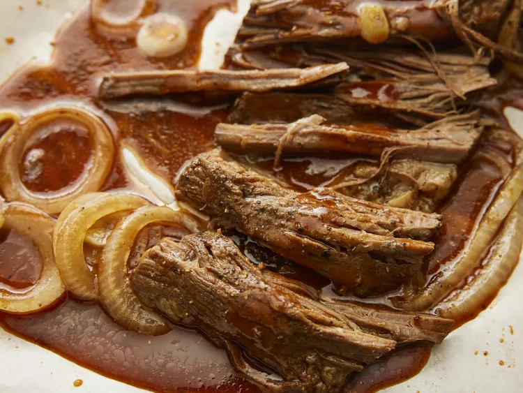

Texas Smoked Beef Brisket

Cook brisket in a crockpot with this wonderful and very easy recipe that's great on those really busy days. The recipe can be increased for a large group or downsized for 2 people. It reminds me of summers in Texas.
Ingredients
Brisket Rub:
- 3 tablespoons smoked paprika
- 2 tablespoons ground black pepper
- 2 tablespoons kosher salt
- 1 tablespoon brown sugar
- 1 tablespoon chili powder
- 1 teaspoon ground cumin
- 1 ½ pounds beef brisket
Barbeque Sauce:
- ¾ cup barbeque sauce
- ¼ cup water (Optional)
- 1 tablespoon Worcestershire sauce
- ¼ teaspoon liquid smoke flavoring
- ½ onion, sliced into rings
Directions
- Gather all ingredients.
- Prepare brisket rub: Mix paprika, pepper, salt, brown sugar, chili powder, and cumin together in a bowl; rub evenly over brisket. Put brisket in a large, resealable plastic bag; refrigerate for 30 minutes to overnight.
- When ready to cook, prepare barbeque sauce: Stir barbeque sauce, water, Worcestershire sauce, and liquid smoke together in the bottom of a slow cooker.
- Remove brisket from the refrigerator and take out of the bag. Lay brisket in sauce in the slow cooker and arrange onions over top.
- Cook on Low until brisket is very tender, 6 to 7 hours.
- Rest brisket 10 minutes before slicing or shredding; serve with sauce from the slow cooker.